Continuous Features
Correlation Matrix
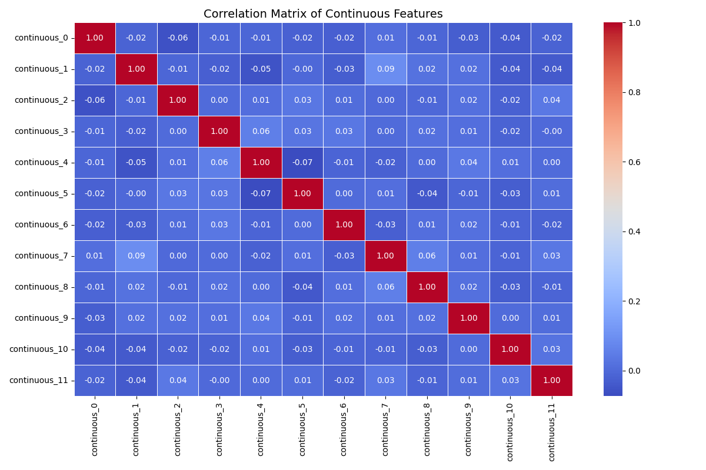
continuous_0
| Statistic | Train | Test |
|---|---|---|
| Mean | -0.04478 | -0.03405 |
| Median | -0.07087 | -0.01079 |
| Std dev | 0.96418 | 1.05491 |
| Variance | 0.92964 | 1.11285 |
| Min | -2.76482 | -2.4703 |
| Max | 3.33386 | 2.8604 |
| Range | 6.09867 | 5.3307 |
| 25 percentile | -0.69489 | -0.8137 |
| 75 percentile | 0.60399 | 0.69077 |
| Skewness | 0.07629 | 0.04868 |
| Kurtosis | -0.15129 | -0.39981 |
| Coefficient of variation | -21.52913 | -30.97962 |
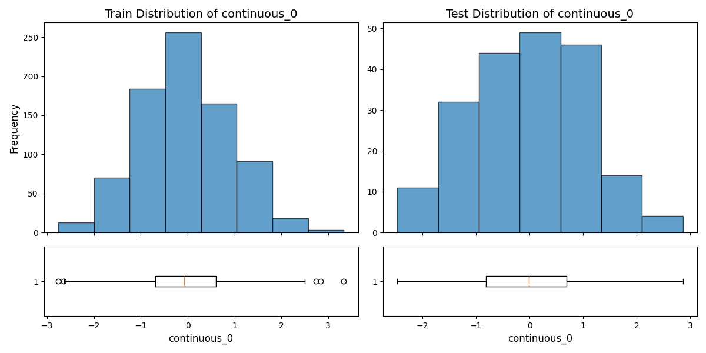
continuous_1
| Statistic | Train | Test |
|---|---|---|
| Mean | -0.08398 | 0.00809 |
| Median | -0.0544 | -0.01486 |
| Std dev | 1.03584 | 1.00718 |
| Variance | 1.07295 | 1.01442 |
| Min | -4.14059 | -2.71022 |
| Max | 2.89678 | 2.72241 |
| Range | 7.03737 | 5.43264 |
| 25 percentile | -0.75043 | -0.65605 |
| 75 percentile | 0.60131 | 0.7037 |
| Skewness | -0.1963 | -0.01997 |
| Kurtosis | 0.28915 | -0.09359 |
| Coefficient of variation | -12.33431 | 124.57149 |
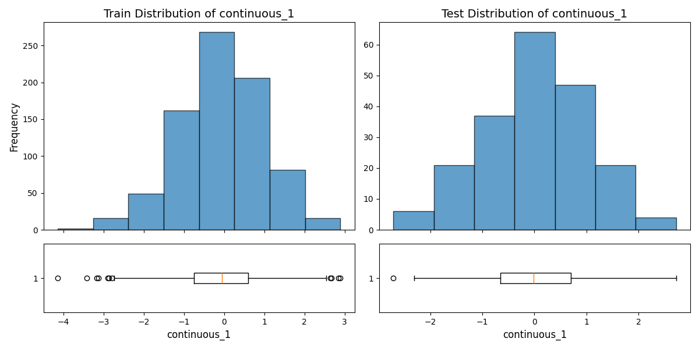
continuous_2
| Statistic | Train | Test |
|---|---|---|
| Mean | -0.04966 | -0.00306 |
| Median | -0.00483 | 0.03262 |
| Std dev | 1.00823 | 0.96496 |
| Variance | 1.01654 | 0.93114 |
| Min | -2.95677 | -2.62246 |
| Max | 2.84583 | 2.64856 |
| Range | 5.8026 | 5.27103 |
| 25 percentile | -0.76425 | -0.54519 |
| 75 percentile | 0.6423 | 0.54302 |
| Skewness | -0.06632 | 0.04029 |
| Kurtosis | -0.27409 | 0.36594 |
| Coefficient of variation | -20.30325 | -314.90506 |
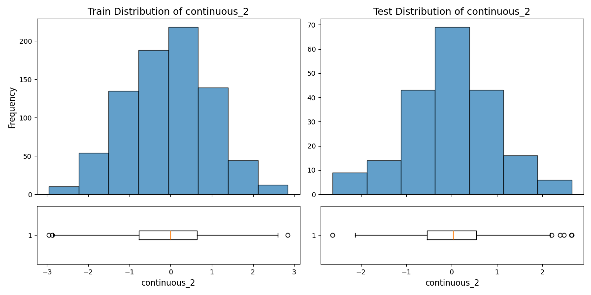
continuous_3
| Statistic | Train | Test |
|---|---|---|
| Mean | 0.05041 | 0.01847 |
| Median | 0.04334 | -0.0011 |
| Std dev | 1.02215 | 0.99748 |
| Variance | 1.04478 | 0.99496 |
| Min | -2.8118 | -2.87787 |
| Max | 3.80417 | 2.60241 |
| Range | 6.61597 | 5.48028 |
| 25 percentile | -0.61637 | -0.69173 |
| 75 percentile | 0.72409 | 0.63015 |
| Skewness | 0.02275 | -0.02021 |
| Kurtosis | 0.01504 | -0.03469 |
| Coefficient of variation | 20.27857 | 54.01212 |
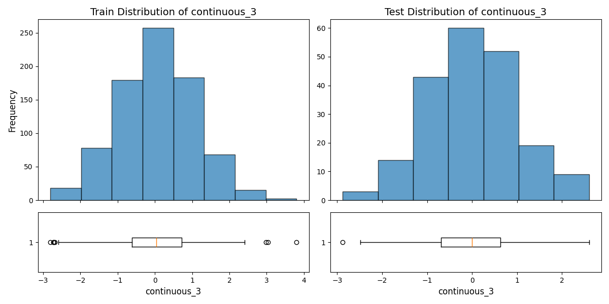
continuous_4
| Statistic | Train | Test |
|---|---|---|
| Mean | -0.01467 | 0.00446 |
| Median | -0.02705 | 0.0545 |
| Std dev | 1.03472 | 1.05618 |
| Variance | 1.07065 | 1.11552 |
| Min | -3.38742 | -3.15126 |
| Max | 3.25869 | 2.57008 |
| Range | 6.64611 | 5.72134 |
| 25 percentile | -0.66553 | -0.73623 |
| 75 percentile | 0.6779 | 0.7516 |
| Skewness | 0.01257 | -0.1904 |
| Kurtosis | -0.18274 | -0.18928 |
| Coefficient of variation | -70.52824 | 236.56904 |
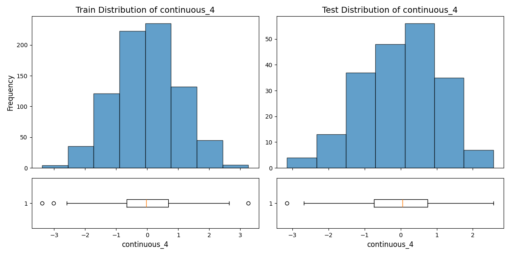
continuous_5
| Statistic | Train | Test |
|---|---|---|
| Mean | -0.06424 | 0.07238 |
| Median | -0.04509 | -0.03745 |
| Std dev | 0.99887 | 0.87502 |
| Variance | 0.99774 | 0.76566 |
| Min | -2.93106 | -2.38207 |
| Max | 3.0846 | 2.95604 |
| Range | 6.01566 | 5.33811 |
| 25 percentile | -0.7853 | -0.44978 |
| 75 percentile | 0.63339 | 0.6151 |
| Skewness | 0.05255 | 0.50543 |
| Kurtosis | -0.11308 | 0.63853 |
| Coefficient of variation | -15.54969 | 12.08927 |
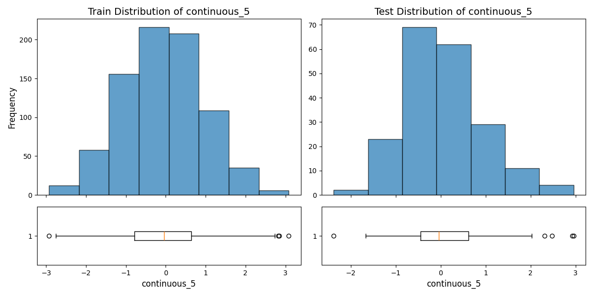
continuous_6
| Statistic | Train | Test |
|---|---|---|
| Mean | 0.00165 | 0.12605 |
| Median | -0.01719 | 0.17563 |
| Std dev | 0.98508 | 0.92564 |
| Variance | 0.97039 | 0.85682 |
| Min | -3.99636 | -2.95957 |
| Max | 2.98311 | 2.77553 |
| Range | 6.97946 | 5.7351 |
| 25 percentile | -0.63569 | -0.41582 |
| 75 percentile | 0.67758 | 0.81811 |
| Skewness | -0.15958 | -0.49826 |
| Kurtosis | 0.4856 | 0.37009 |
| Coefficient of variation | 597.18544 | 7.34362 |
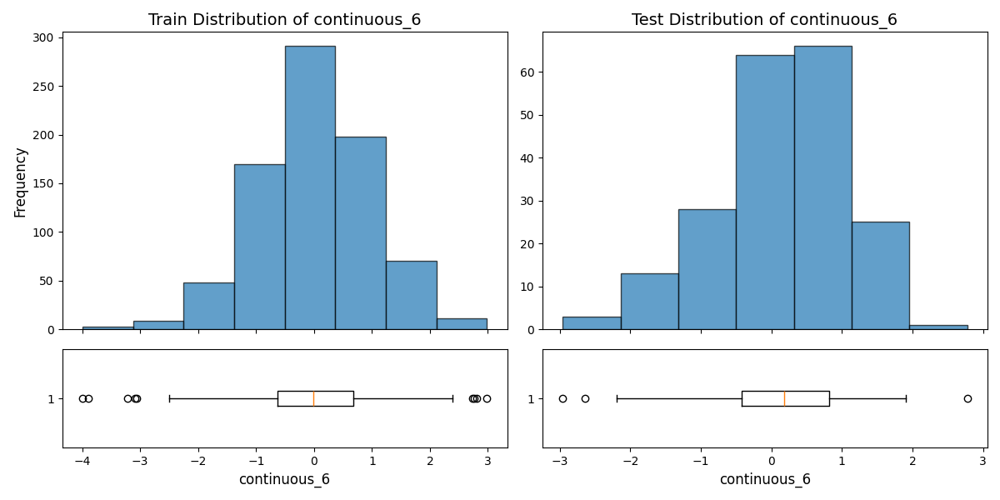
continuous_7
| Statistic | Train | Test |
|---|---|---|
| Mean | 0.00104 | -0.09427 |
| Median | 0.00558 | -0.08689 |
| Std dev | 0.9534 | 1.03479 |
| Variance | 0.90896 | 1.07078 |
| Min | -2.92096 | -2.98598 |
| Max | 2.60796 | 2.42028 |
| Range | 5.52892 | 5.40627 |
| 25 percentile | -0.64826 | -0.90154 |
| 75 percentile | 0.61056 | 0.65671 |
| Skewness | 0.06486 | 0.07922 |
| Kurtosis | -0.16113 | -0.54311 |
| Coefficient of variation | 915.99243 | -10.97719 |
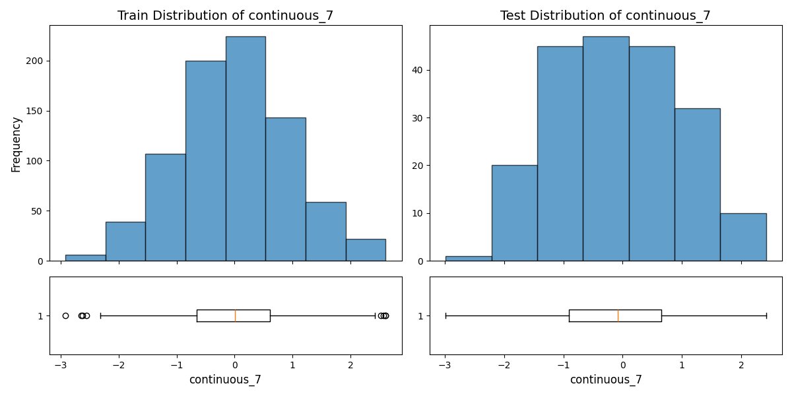
continuous_8
| Statistic | Train | Test |
|---|---|---|
| Mean | 0.01136 | 0.06086 |
| Median | 0.02356 | 0.14753 |
| Std dev | 0.98567 | 0.97097 |
| Variance | 0.97155 | 0.94279 |
| Min | -2.82538 | -3.05122 |
| Max | 3.27348 | 2.94138 |
| Range | 6.09886 | 5.9926 |
| 25 percentile | -0.66292 | -0.61527 |
| 75 percentile | 0.67066 | 0.76151 |
| Skewness | 0.0155 | -0.26256 |
| Kurtosis | -0.01211 | 0.28799 |
| Coefficient of variation | 86.76129 | 15.95426 |
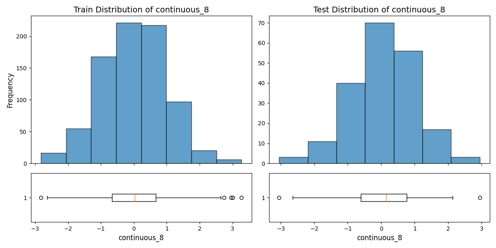
continuous_9
| Statistic | Train | Test |
|---|---|---|
| Mean | 0.00505 | -0.04073 |
| Median | 0.06491 | -0.09642 |
| Std dev | 0.99151 | 0.8874 |
| Variance | 0.98309 | 0.78748 |
| Min | -3.61515 | -2.13018 |
| Max | 3.49202 | 1.9988 |
| Range | 7.10717 | 4.12898 |
| 25 percentile | -0.62394 | -0.67224 |
| 75 percentile | 0.70851 | 0.59684 |
| Skewness | -0.23263 | 0.01308 |
| Kurtosis | 0.12815 | -0.46746 |
| Coefficient of variation | 196.15929 | -21.78737 |
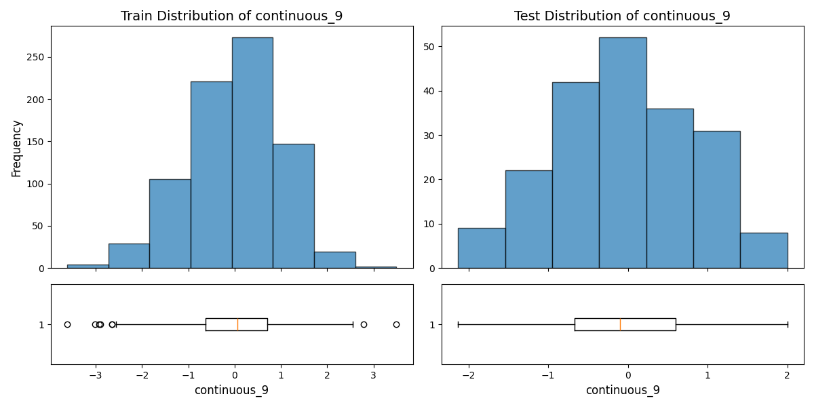
continuous_10
| Statistic | Train | Test |
|---|---|---|
| Mean | -0.00904 | 0.08523 |
| Median | 0.00636 | 0.10409 |
| Std dev | 0.97832 | 1.01321 |
| Variance | 0.95712 | 1.02659 |
| Min | -2.82378 | -2.66611 |
| Max | 2.79043 | 2.88411 |
| Range | 5.6142 | 5.55021 |
| 25 percentile | -0.67468 | -0.65667 |
| 75 percentile | 0.69202 | 0.77024 |
| Skewness | -0.06841 | -0.13195 |
| Kurtosis | -0.24461 | -0.16856 |
| Coefficient of variation | -108.17375 | 11.88839 |
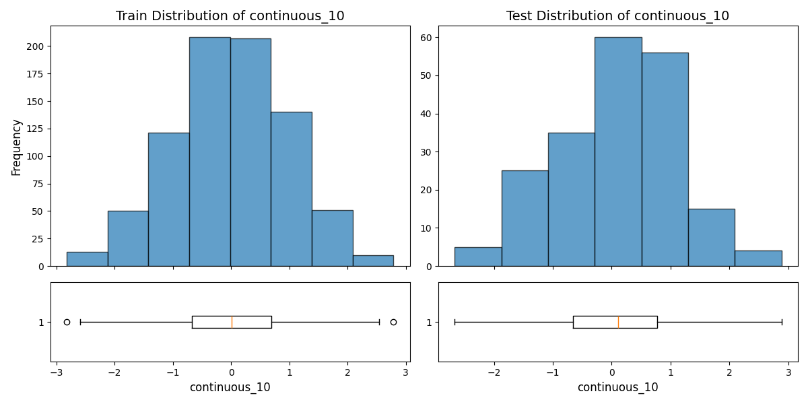
continuous_11
| Statistic | Train | Test |
|---|---|---|
| Mean | 0.02736 | -0.00531 |
| Median | 0.03171 | 0.00117 |
| Std dev | 1.04702 | 0.97266 |
| Variance | 1.09626 | 0.94607 |
| Min | -2.78277 | -2.74541 |
| Max | 3.01925 | 2.69485 |
| Range | 5.80201 | 5.44026 |
| 25 percentile | -0.71125 | -0.69263 |
| 75 percentile | 0.72467 | 0.65025 |
| Skewness | 0.01961 | 0.0284 |
| Kurtosis | -0.31179 | -0.23909 |
| Coefficient of variation | 38.26202 | -183.34591 |
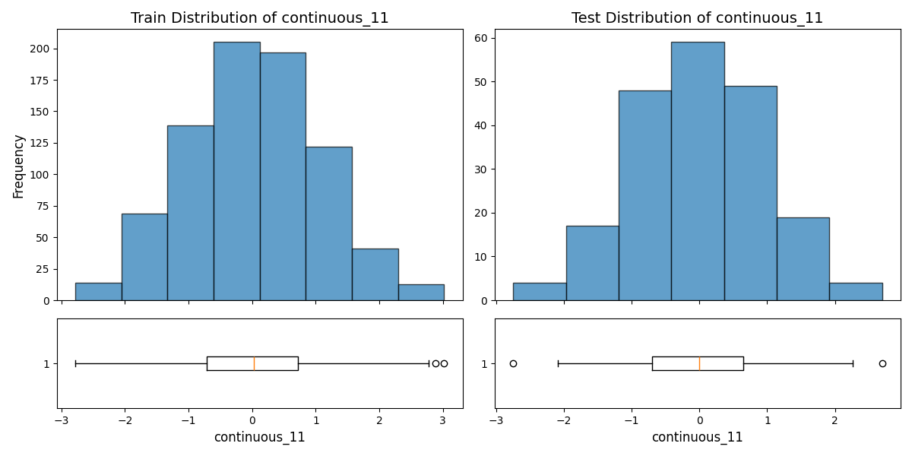
Categorical Features
categorical_0
| Statistic | Train | Test |
|---|---|---|
| Frequency | 0.0: 151 1.0: 146 2.0: 163 3.0: 166 4.0: 174 |
0.0: 37 1.0: 37 2.0: 42 3.0: 44 4.0: 40 |
| Proportion | 0.0: 18.88% 1.0: 18.25% 2.0: 20.38% 3.0: 20.75% 4.0: 21.75% |
0.0: 18.50% 1.0: 18.50% 2.0: 21.00% 3.0: 22.00% 4.0: 20.00% |
| Num unique | 5 | 5 |
| Entropy | 2.3190000594553455 | 2.318511210630796 |
| Chi2 stat | 0.39593995252319014 | 0.39593995252319014 |
| P value | 0.9828079606154081 | 0.9828079606154081 |
| Degrees of freedom | 4 | 4 |
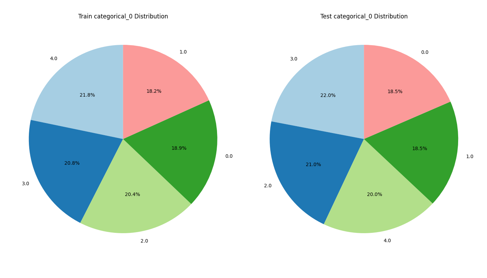
categorical_1
| Statistic | Train | Test |
|---|---|---|
| Frequency | 0.0: 195 1.0: 183 2.0: 214 3.0: 208 |
0.0: 53 1.0: 51 2.0: 44 3.0: 52 |
| Proportion | 0.0: 24.38% 1.0: 22.88% 2.0: 26.75% 3.0: 26.00% |
0.0: 26.50% 1.0: 25.50% 2.0: 22.00% 3.0: 26.00% |
| Num unique | 4 | 4 |
| Entropy | 1.9973963422117913 | 1.996299524295856 |
| Chi2 stat | 2.161709297516687 | 2.161709297516687 |
| P value | 0.5395297700763444 | 0.5395297700763444 |
| Degrees of freedom | 3 | 3 |
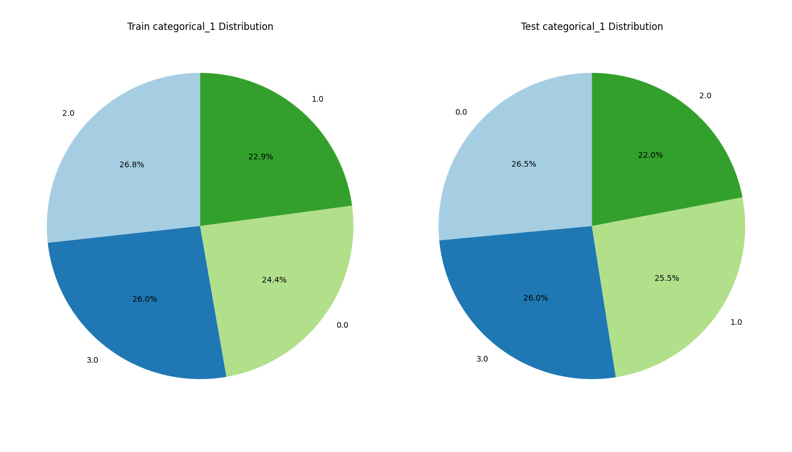
categorical_2
| Statistic | Train | Test |
|---|---|---|
| Frequency | 0.0: 151 1.0: 169 2.0: 161 3.0: 169 4.0: 150 |
0.0: 37 1.0: 42 2.0: 50 3.0: 39 4.0: 32 |
| Proportion | 0.0: 18.88% 1.0: 21.12% 2.0: 20.12% 3.0: 21.12% 4.0: 18.75% |
0.0: 18.50% 1.0: 21.00% 2.0: 25.00% 3.0: 19.50% 4.0: 16.00% |
| Num unique | 5 | 5 |
| Entropy | 2.3199852072093488 | 2.3061031782280095 |
| Chi2 stat | 2.6832457854865712 | 2.6832457854865712 |
| P value | 0.6121495522770142 | 0.6121495522770142 |
| Degrees of freedom | 4 | 4 |
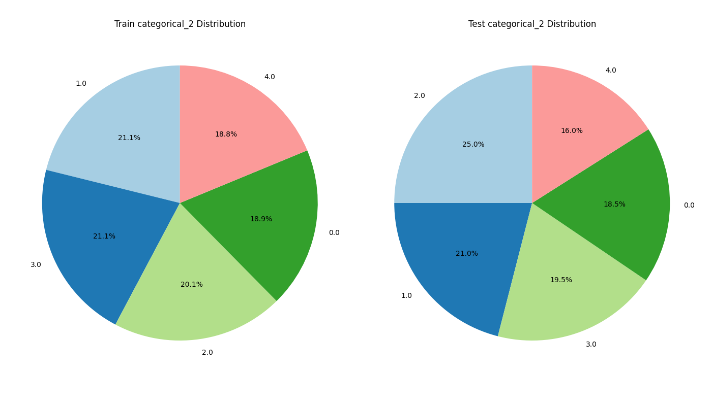